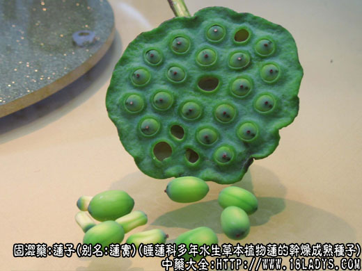
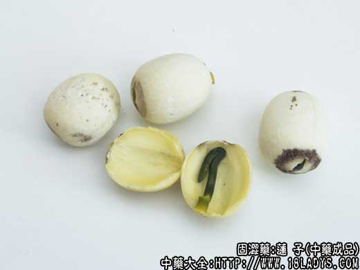
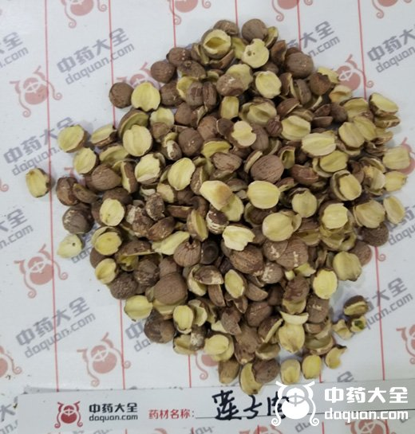

莲子为常用中药。始载《神农本草经》，藕实项下，列为上品。现市售商品有建莲子，湘莲子，湖莲子三种，另外还有带壳的石莲子。
别名：藕实、水芝丹、莲实、莲蓬子、莲肉。
来源：本品为睡莲科多年水生草本植物莲（荷花）的干燥成熟种子。多为人工栽培，也有湖滨自生。
产地：主产于福建（建莲子）湖南（湘莲子）、湖北、江西、江苏、浙江等省。全国各地均有栽培。湖滨自生者多为湖莲子。
性状鉴别：建莲子：类圆形，直径约1.5厘米，长约1.7厘米，表面淡黄白色或带粉色。顶端作凸形突，棕红色，正中常有裂隙，自裂隙处可剥为两瓣（两片子叶）瓣呈凹槽形状，内黄白色，中有绿色胚芽一枚（莲子芯）。质坚实。气无，味甘淡、微涩。
湘莲子：外形略似建莲子，但略圆小，纵横径约13.3厘米，表皮灰棕色，显细密的纵顺纹。涩味略重。余约与建莲子相同。
湖莲子：多为湖滨自生品，体型略显细瘦直径约一厘米，长约一点五厘米。表皮淡棕色，余约与湘莲子相同。
石莲子：为代硬壳的湖莲子干燥的果实。呈椭圆形，两端略尖，长1.8厘米左右，直径约为1.2厘米。外壳灰黑色，表面平滑，一端有小圆凹点，另一端有微小短柄。壳厚约一毫米，内含莲子一枚。质坚硬，不易破裂。
秋季采得者老而质硬，其真品入水必沉，百年不坏。功同普通莲子，并能去湿热而治湿滞并治噤口痢（严重的久痢胃虚，影响到饮食难于下咽），目前真品已难得，通常以普通莲子代石莲子用。在广东，有以苦莲子代用。但实际上，苦莲子虽亦为黑而坚硬，但生于跌打止痛，其用与真正石莲子有区别。
主要成分：含棉子糖、又钙、磷、铁的含量也较丰富。
药理作用：清心益肾、固脾止泻，有收敛、镇静和轻微的滋养作用。
炮制：带心或去心，捣碎生用。
性味：甘，平。
归经：入心、脾、肾三经。
功能：健脾养心，止泻固精。
主治：脾虚泄泻，梦遗滑精，心悸失眠，崩漏带下，久痢下血。
临床应用：作为收敛性强壮药，一般只起辅助作用。
（1）用于清心火而宁神。治心火亢盛、肾阴不足而致的心肾不交，表现为精神烦躁、睡眠不宁、心悸、烦躁、口干、尿赤，或有梦遗。莲子有清心火（清热、镇静）作用，轻症配百合、生苡米、沙参水煎服即可；重症相当于兴奋型神经衰弱，需加配清热药和补益药，如黄芩或黄地、地骨皮、党参、黄芪等，方如清心莲子饮。
（2）用于补脾胃而止泻。配党参、白术、茯苓能治脾胃虚弱，食欲不振、消化吸收不良；如兼有腹泻，可加配淮山药、薏苡仁等，方如参苓白术散。
使用注意：有实热积滞和大便秘结慎用。
用量：6～12g
处方举例：清心莲子饮（《局方》）：莲子、党参、茯苓、黄芪各22.5g，黄芩、麦冬、地骨皮、车前子、炙甘草各15g，研末，每服9g，水煎，饭前服。